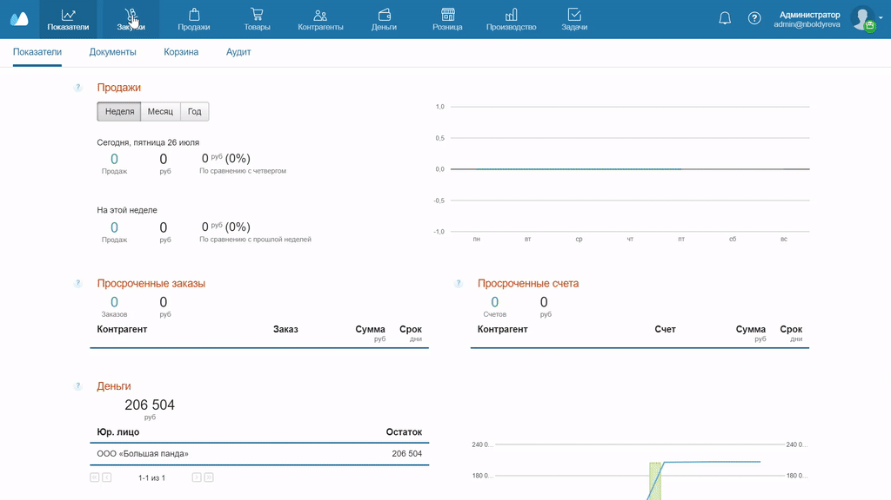

В МоемСкладе можно создавать новые документы на основании уже созданных. Так вам не придется заново добавлять позиции, цены, контрагента, склады и заполнять любые другие поля — данные подтянутся автоматически.
Функция работает во всех документах разделов Продажи, Закупки, Деньги и Склад. Рассказываем на примере Заказа поставщикам.
- Зайдите в раздел Закупки → Заказы поставщикам и выберите нужный заказ.
- Нажмите Создать документы и в выпадающем списке выберите, что хотите сделать: счет поставщика, приемку, исходящий платеж, расходный ордер. Откроется окно с новым документом, при этом все данные подтянутся из заказа поставщику.
- Сохраните документ.
